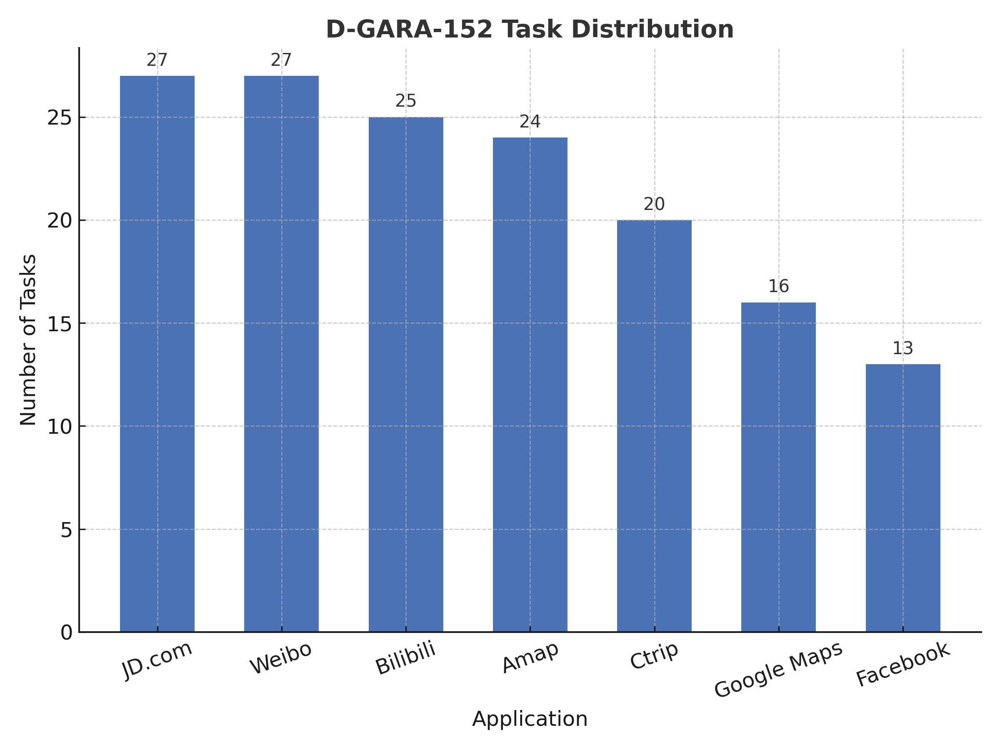
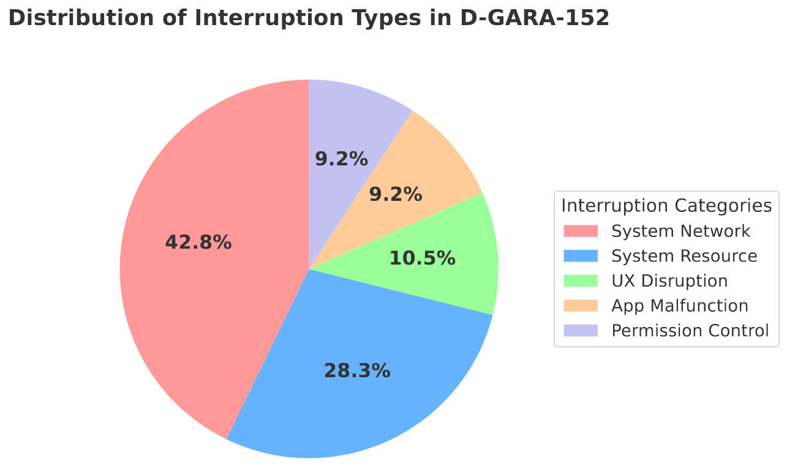

Pipeline of D-GARA Framework for Real-World GUI Agents Robustness Evaluation, Including Rule-Based Interruption Injection and Goal-State Validation.
Abstract
Developing intelligent agents capable of operating a wide range of Graphical User Interfaces (GUIs) with human-level proficiency is a key milestone on the path toward Artificial General Intelligence. While most existing datasets and benchmarks for training and evaluating GUI agents are static and idealized, failing to reflect the complexity and unpredictability of real-world environments, particularly the presence of anomalies. To bridge this research gap, we propose D-GARA, a dynamic benchmarking framework, to evaluate Android GUI agent robustness in real-world anomalies. D-GARA introduces a diverse set of real-world anomalies that GUI agents commonly face in practice, including interruptions such as permission dialogs, battery warnings, and update prompts. Based on D-GARA framework, we construct and annotate a benchmark featuring commonly used Android applications with embedded anomalies to support broader community research. Comprehensive experiments and results demonstrate substantial performance degradation in state-of-the-art GUI agents when exposed to anomaly-rich environments, highlighting the need for robustness-aware learning. D-GARA is modular and extensible, supporting the seamless integration of new tasks, anomaly types, and interaction scenarios to meet specific evaluation goals.
Data Statistics and Comparison


The D-GARA-152 benchmark consists of 152 evaluation tasks distributed across eight mainstream mobile applications, with higher task densities in complex, high-usage platforms such as JD.com, Weibo, and Bilibili. This distribution ensures that GUI agents are evaluated under diverse and realistic interaction scenarios.
In parallel, D-GARA-152 introduces five major types of GUI interruptions, designed to reflect real-world user experiences. System Network and System Resource anomalies dominate the benchmark, while UX Disruptions, App Malfunction, and Permission Control provide complementary challenges, resulting in a balanced and comprehensive robustness evaluation.
| Benchmark | #Apps/Web | #Tasks | Platform | Anomaly? | Dynamic? | Lang. |
|---|---|---|---|---|---|---|
| Mind2Web | 137 | 2,350 | Desktop Web | ✖ | ✖ | EN |
| GUI Odyssey | 201 | 7,735 | Android Apps | ✖ | ✖ | EN |
| OSWorld | 9 | 369 | Desktop (Apps + Web) | ✖ | ✔ | EN |
| Windows AgentArena | 11 | 154 | Desktop (Apps + Web) | ✖ | ✔ | EN |
| WorldGUI | 10 | 315 | Desktop Apps | ✖ | ✔ | EN |
| Android World | 20 | 116 | Android Apps | ✖ | ✔ | EN |
| SPA-Bench | 58 | 340 | Android Apps | ✖ | ✔ | EN & CN |
| GUI-Robust | 392 | 5,318 | Desktop (Apps + Web) | ✔ | ✖ | EN & CN |
| D-GARA-152 (ours) | 7 | 152 | Android Apps | ✔ | ✔ | EN & CN |
Results and Analysis
| Model | SR (NoInt) | SR (WithInt) | RSR |
|---|---|---|---|
| Gemini2.5-flash | 80.26% | 68.42% | 73.77% |
| GPT-4o | 69.08% | 60.53% | 66.67% |
| Qwen2.5-VL-7B | 69.08% | 46.05% | 53.33% |
| UI-TARS-1.5-72B | 50.66% | 39.47% | 48.05% |
| AgentCPM-GUI-8B | 59.87% | 26.97% | 39.56% |
Performance of models under interruption and non-interruption conditions (SR-NoInt and SR-WithInt indicate success rates under normal and interrupted scenarios, while RSR measures how well models maintain performance when unexpected interruptions occur.)
As shown in Table 1, all evaluated models exhibit a significant decline in task success rates under interruption conditions, with an average decrease exceeding 18.29%. This finding indicates that none of the current agents can effectively handle unexpected events during execution. The results further confirm that performance on static benchmarks does not necessarily translate to robustness in dynamic, real-world environments.
Larger models, such as GPT-4o and Gemini2.5-flash, demonstrate stronger resilience and a higher ability to maintain stable performance when encountering interruptions. This can be attributed to their more advanced planning and reasoning capabilities, which enable them to recover from anomalies more effectively.
In contrast, models like AgentCPM-GUI-8B and UI-TARS-1.5-72B, despite being specifically designed for GUI interaction, exhibit weaker robustness. This suggests that their training primarily focuses on visual perception of the user interface, while their decision-making and planning abilities remain constrained by the limitations of their underlying base architectures.
For full results and more details, please refer to our paper .
Evaluation Setup
Environment Setup
Our evaluation requires an Android environment with a working ADB connection. You can use either a physical device or an emulator. Click one of the options below to view details.
Installation
# Create and activate environment
conda create -n dgara python=3.10 -y
conda activate dgara
# Clone the D-GARA repository and enter it
git clone https://github.com/sen0609/D-GARA.git
cd D-GARA
# Install dependencies
pip install -r requirements.txt
Preparing to Connect a Mobile Device via ADB
- Install Android Debug Bridge (ADB).
- Enable USB Debugging in developer options on your Android device.
- Connect your device via USB and select File Transfer mode.
- Verify connection:
If your device appears in the list asadb devicesdevice, you are ready to proceed.
Install ADB Keyboard (Optional)
- Install ADB Keyboard on the device.
- Switch the default input method to ADB Keyboard when programmatic typing is required.
Preparing to Connect an Android Emulator via ADB
- Use Android Studio’s AVD Manager or a third-party emulator (e.g., MuMuPlayer).
- Create an emulator with the desired API level (API 31 is recommended) and start it.
- Confirm detection by ADB:
adb devices # Example: emulator-5554 device
After completing one of the setup paths, your environment will be ready for the D-GARA framework.
Tool & App Setup
Install adbsmarttest.apk
Install our testing toolkit on the target device or emulator.
# Install the toolkit
adb install -r ./adbsmarttest.apk
# Verify installation
# Windows PowerShell:
adb shell pm list packages | findstr adbsmarttest
# Linux/macOS:
adb shell pm list packages | grep adbsmarttest
Install Apps Under Test
For the D-GARA-152 evaluation, install: Bilibili, Gaode Maps (Amap), JD (Jingdong), Weibo, Ctrip, Google Maps, and Facebook. You may use local APK files or the built-in app store. Ensure your environment has unrestricted Internet access to avoid connectivity issues with external APIs or CDNs.
If using an app store, launch each app once and clear any first-run dialogs (login, agreements, etc.) before testing.
Configuration
Configure your evaluation by defining the model interface and launching the test via main.py.
Implement get_action_and_coordinates(...)
In AgentFramework/Deployment, use a template (API, vLLM, etc.) and implement the function below according to
how your model is accessed.
# Call your model API and parse the response into this format.
def get_action_and_coordinates(image_path, task_goal, screen_width, screen_height, normalized_elements, history=None):
Return a dict:
{
"thought": "...",
"action": "tap|text|swipe|back|done|wait|home",
"target": "UI element description",
"coords": [x, y] or [x1, y1, x2, y2],
"input_text": "optional"
}
Prompt design: if your model has its own prompt or action space, follow its native format;
Run the Evaluation
Specify your model in AgentFramework/pipeline.py by importing its implementation, then launch:
python main.py ^
--device 127.0.0.1:7555 ^ # optional: emulator/device serial (MuMu example)
--step 15 ^ # maximum execution steps (default 15)
--width 1440 ^ # match your device/emulator screen width
--height 2560 ^ # match your device/emulator screen height
--interference ^ # optional: enable interference mode
--max-interferences 1 ^ # optional: number of interferences per task
--start-id 1 ^ # optional: starting task ID
--end-id 50 # optional: ending task ID
(PowerShell uses ^ for line continuation. On macOS/Linux, replace with \.)
Network & Connectivity
Ensure stable network connectivity with unrestricted access to required online resources.
Extension Setup
Extend D-GARA with custom interference modes and new tasks — all without touching core logic. Choose a path below to proceed.
Extend Interference Modes
Extend the benchmark by designing new interference types (e.g., single-button, dual-button, banner, or image-based pop-ups).
The process involves two layers: UI implementation and packaging, and logical registration
within interference_library.yaml.
1. Implement the UI (APK Layer)
Edit our interference_template project in Android Studio to create the visual and interactive behavior of your new interference.
Then rebuild and install the updated adbsmarttest.apk.
- Clone & import
interference_templateinto Android Studio. - Design the interference layout (popup, banner, toast, etc.) with unique, stable resource IDs.
- Implement triggers (e.g., broadcast intent or activity entry point).
- Build & install the release APK:
2. Register the Logic (YAML Layer)
Once the UI layer is ready, register its logic in interference_library.yaml.
Each interference definition specifies its activity entry, parameters, and corresponding post actions.
Once registered, the new interference type becomes reusable within the D-GARA framework.
You can later reference its id (e.g., data_warning_double_en) in task configurations or
interference rules to trigger it dynamically during evaluation.
- ✅ UI implemented and repackaged into
adbsmarttest.apk. - ✅ Logical behavior registered in
interference_library.yaml. - ✅ Verified installation and rule referencing works as expected.
- ✅ Interference ID ready to be used in future task extensions.
After completing these steps, your new interference mode can be directly integrated when creating or extending tasks in the Extend Tasks section below.
Extend Tasks
1. Pick app & draft tasks
Choose the target app and define tasks. Quick variants (e.g., “search iPhone 17” → “search PS5”) scale your set rapidly.
Example of a basic task definition — used in the following data collection process:
[
{
"id": 1,
"description": "打开哔哩哔哩，搜索“稻香”，点击第一个视频，并点击“点赞”按钮",
"app": "tv.danmaku.bili",
"rule_key": "task_bili_search_and_like_video",
"target_rule_ids": ["rule_bili_data_warning_double_1"]
}
]
2. Collect pages (screenshots + UI XML) the agent may encounter in an app:
# Windows PowerShell:
python tools/datacollector.py ^
--device 127.0.0.1:7555 ^
--tasks ./configs/tasks.json ^
--out ./Collected_trajs ^
--max-steps 30
# macOS/Linux:
python tools/datacollector.py \
--device 127.0.0.1:7555 \
--tasks ./configs/tasks.json \
--out ./Collected_trajs \
--max-steps 30
Press S to save (screenshot + XML) or N to skip. Files are placed under
Collected_trajs/<id>_<description>/.
3. Map interference points on meaningful pages to inject distractions deterministically:
- id: rule_bili_data_warning_double_1
description: "Trigger data-usage warning on video page"
priority: 500
conditions:
all:
- type: semantic_element_exists
match_threshold: 0.5
keywords: ["简介","评价","关注"]
actions:
- type: inject_interference
interference_id: "data_warning_double"
trigger_probability: 1
4. Define success rules using terminal-state XML (tolerant to layout variants):
task_bili_search_and_like_video:
description: "Unified validation of Bilibili like status (landscape & portrait)"
conditions:
- type: any_of
sub_conditions:
- type: element_property_contains
selector: "resource-id='tv.danmaku.bili:id/frame_like'"
attribute: "content-desc"
value: "已点赞"
- type: element_property
selector: "resource-id='tv.danmaku.bili:id/like_icon'"
attribute: "selected"
value: "true"
Why human verification? Real-world apps evolve constantly, and some pages cannot be captured via ADB. Therefore, rule-based validation may not always be reliable. Until GUI agents can reliably detect task completion themselves, we rely on a lightweight human verification step to ensure accuracy.
- Goal reached = pass: If the agent lands on the intended target page or screen state, mark as correct.
- Equivalent outcome = pass: If the final result is functionally equivalent (e.g., same search intent, same action achieved via a different path), mark as correct.
- Premature trigger = fail: If the success validator is accidentally triggered mid-trajectory (before the agent truly finishes the task) and stops execution, mark as incorrect.
- Unavailable evidence = inconclusive: If critical UI XML or screenshots cannot be captured due to app limitations or transient issues, mark as inconclusive and re-run before final judgment.
These rules are intentionally simple and conservative. As GUI Agent capabilities improve (e.g., reliable self-termination on goal), this human verification step can be reduced or removed.
BibTeX
@article{Chen2026DGARA,
title={D-GARA: A Dynamic Benchmarking Framework for GUI Agent Robustness in Real-World Anomalies},
author={Sen Chen and Tong Zhao and Yi Bin and Fei Ma and Wenqi Shao and Zheng Wang},
journal={arXiv preprint arXiv:2511.16590},
year={2025}
}